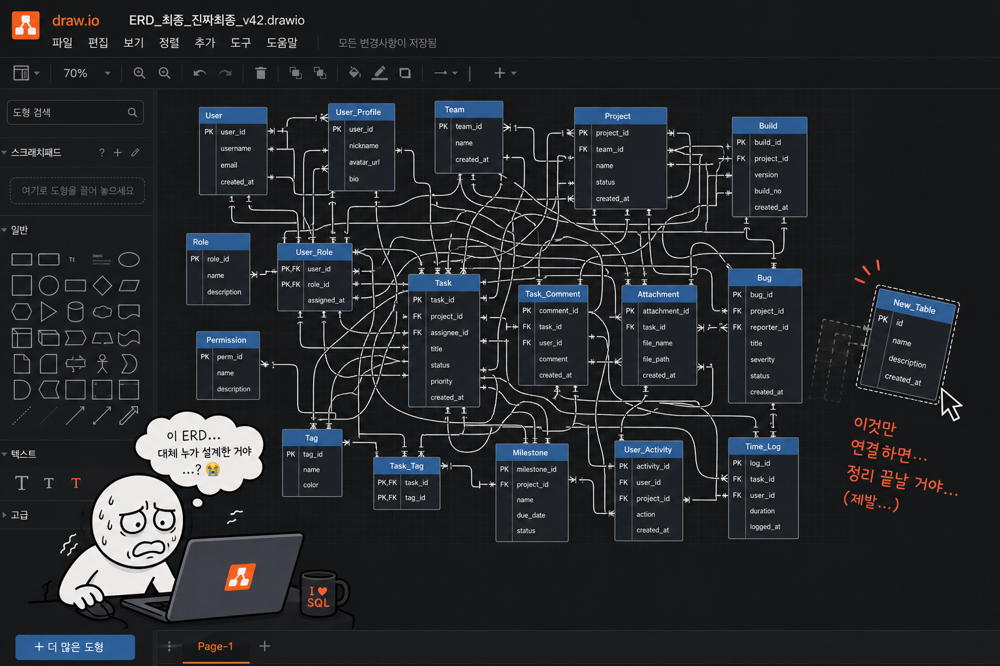

매크로 · ERD
ERD,
이렇게 관리하고 계신가요?
데이터 테이블의 각 컬럼과 관계 규칙을 정리한
관계도(ERD)
기획 데이터가 늘어날수록 테이블 간 관계는 점점 복잡해짐
매번 Draw.io 같은 툴로 직접 그려서 갱신 — 반복되는 수작업
실제 데이터와 다이어그램이 어긋나기 시작하면 신뢰도가 급격히 떨어짐
이
"그리는 일"
부터 자동화할 수는 없을까?
23 / 76
